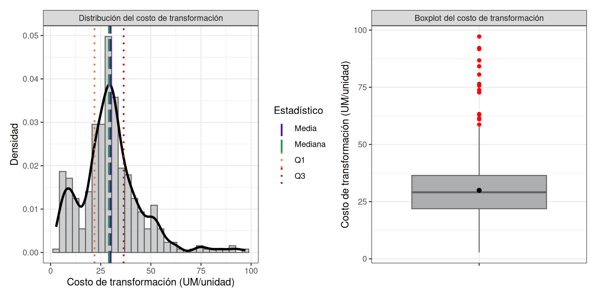
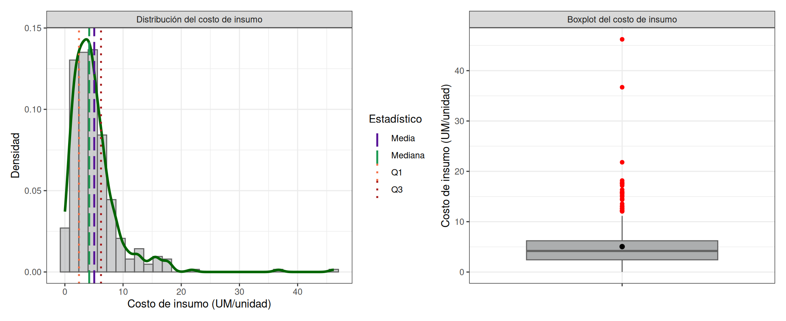
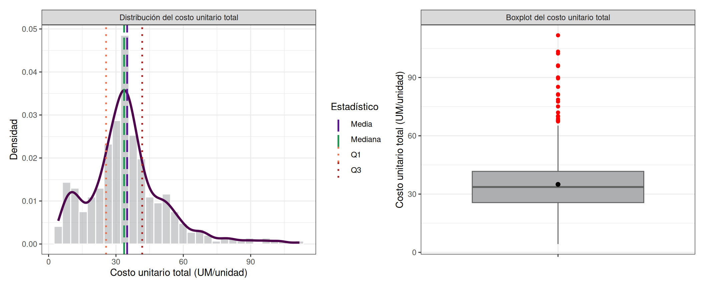
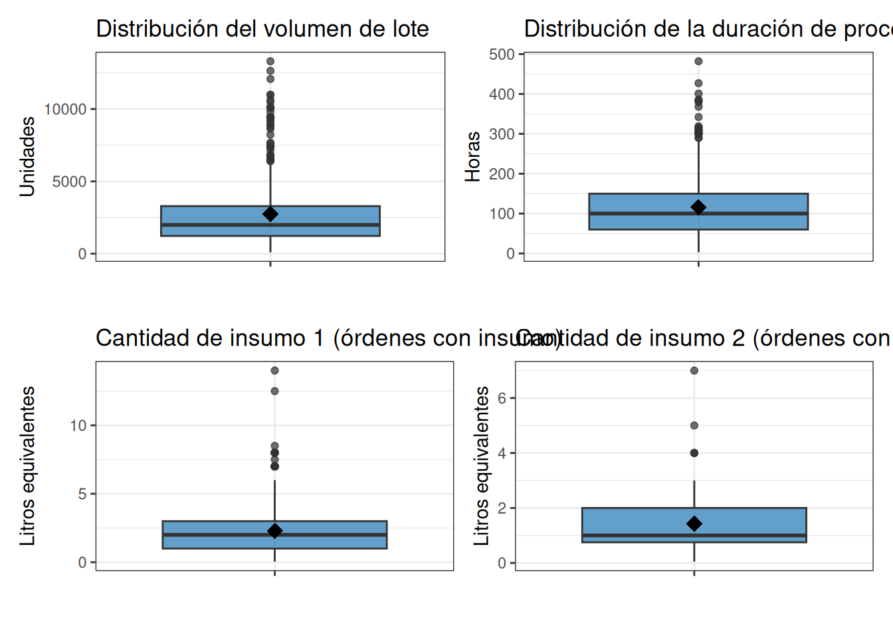
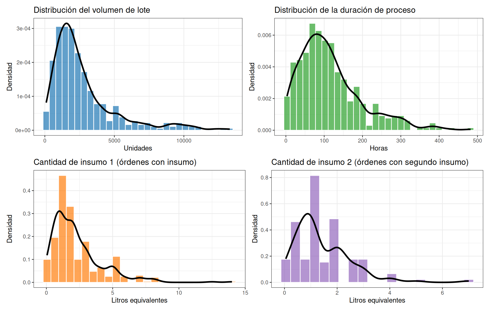
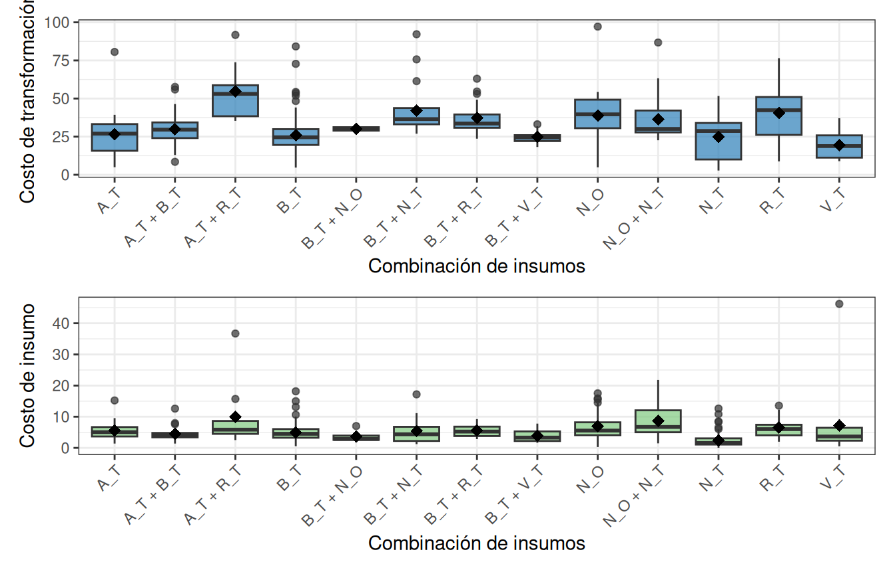
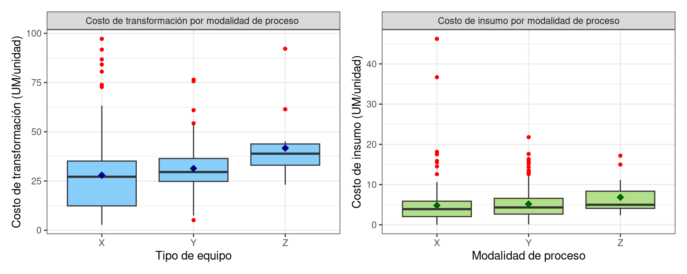
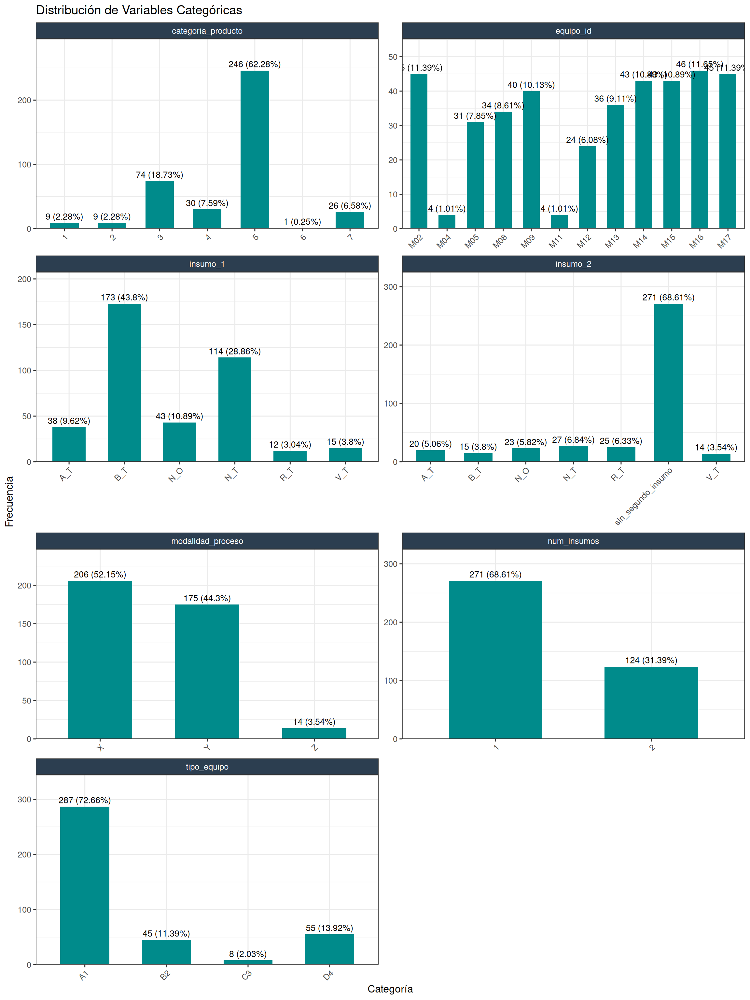
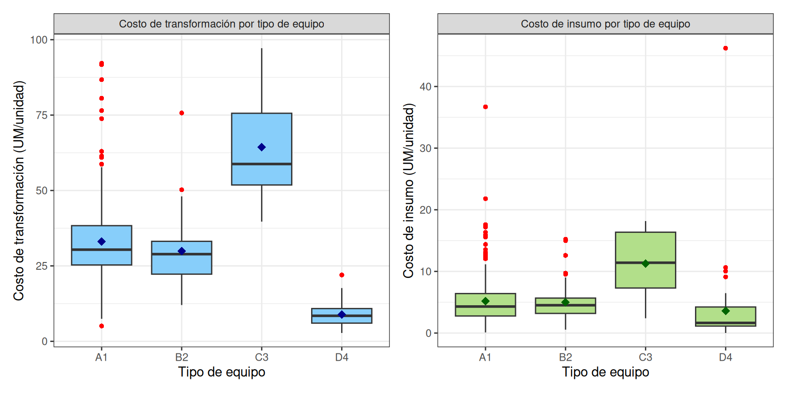
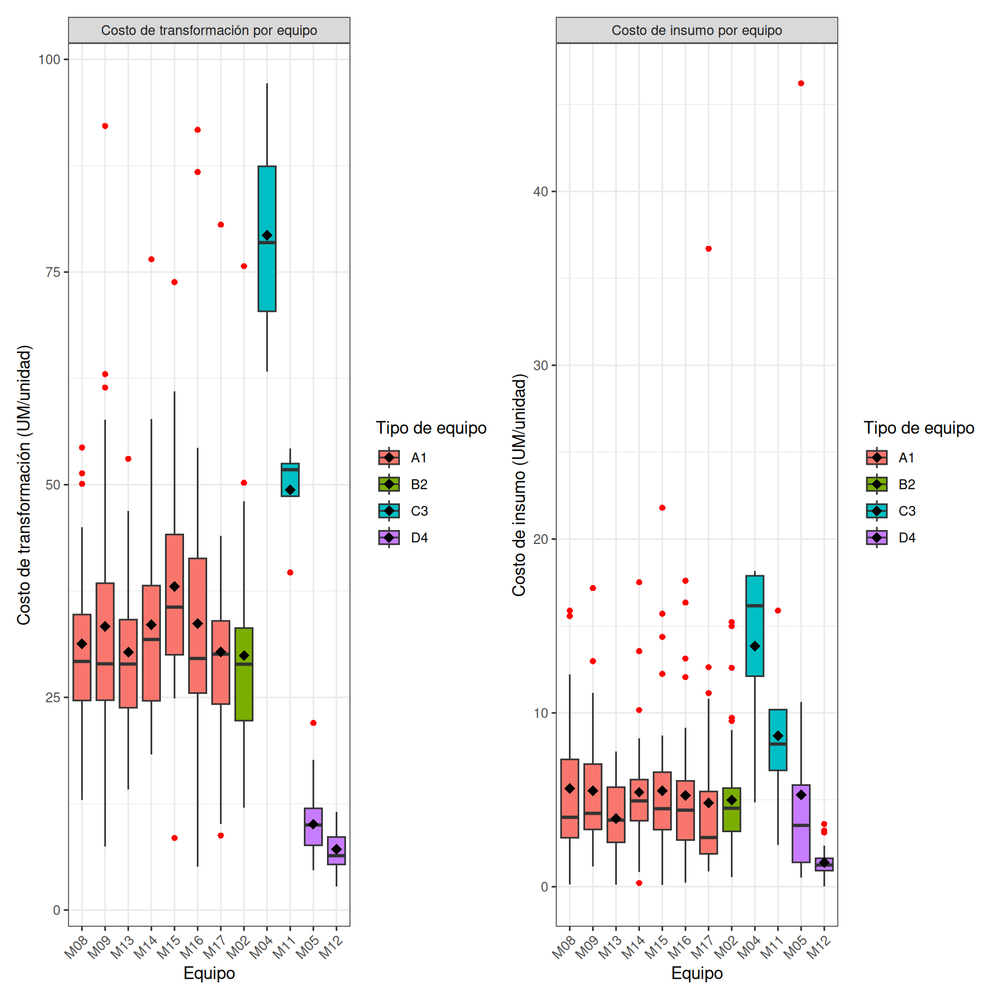

Capítulo 6 Análisis Exploratorio de Datos Version2
6.0.1 Carga del dataset analítico
Se parte del dataset depurado en el capítulo de metodología (395 órdenes de producción con tipos ajustados). La limpieza previa ya eliminó errores de digitación y validó la integridad de los registros; este capítulo se concentra en entender qué dicen esos datos.
library(tidyverse)
library(patchwork)
library(gridExtra)
library(knitr)
library(kableExtra)
datos <- readRDS("data/data_costos_limpio.rds") %>%
mutate(costo_unitario_total = costo_transformacion + costo_insumo)
n_total <- nrow(datos)El dataset contiene 395 órdenes de producción y 17 variables.
6.1 Análisis univariado de los costos
Las tres variables respuesta del estudio son costo_transformacion (costo de conversión por unidad producida), costo_insumo (costo de materias primas por unidad producida) y su agregado costo_unitario_total. Se analizan en paralelo porque responden a lógicas operativas distintas: el costo de transformación refleja eficiencia de máquina y proceso, mientras que el costo de insumo refleja decisiones de formulación y consumo de materias primas.
6.1.1 costo_transformacion
datos %>%
summarise(
n = length(costo_transformacion),
media = mean(costo_transformacion),
ds = sd(costo_transformacion),
`50%` = median(costo_transformacion),
minimo = min(costo_transformacion),
maximo = max(costo_transformacion),
Q1 = quantile(costo_transformacion, 0.25),
Q3 = quantile(costo_transformacion, 0.75),
IQR = IQR(costo_transformacion)
) -> resumen_ct
knitr::kable(resumen_ct, caption = "Resumen del costo de transformacion") %>%
kableExtra::kable_styling(full_width = FALSE) | n | media | ds | 50% | minimo | maximo | Q1 | Q3 | IQR |
|---|---|---|---|---|---|---|---|---|
| 395 | 29.93986 | 15.25873 | 29.0901 | 2.76611 | 97.1848 | 21.90816 | 36.44523 | 14.53708 |
La variable costo_transformacion se analizó a partir de 395 órdenes de producción.
Se obtuvo un costo medio de conversión por unidad de 29.94 UM/unidad (DS = 15.26 UM/unidad), con un coeficiente de variación de 51%. El 50% de las órdenes presenta un costo de conversión por debajo de 29.09 UM/unidad.
La desviación estándar alcanza 15.26, lo que equivale a un coeficiente de variación de 51%. Quiere decir que los costos fluctúan de manera importante respecto al promedio.
El rango intercuartílico (14.54) indica que la mitad central de los datos se sitúa en un intervalo relativamente acotado, lo que describe el comportamiento típico del proceso.
Sin embargo, los extremos revela algo distinto. Mientras el valor mínimo (2.77) se mantiene dentro de lo esperado, el máximo (97.18) se encuentra considerablemente alejado del resto. Este comportamiento puede sugerir la presencia de valores atípicos en la parte superior de la distribución, generando una cola hacia la derecha.
En términos prácticos, esto significa que la mayoría de los procesos operan en niveles de costo relativamente estables, pero existen casos puntuales significativamente más costosos. Estos valores extremos pueden responder a procesos más complejos o a posibles inconsistencias en los datos, por lo que requieren un análisis específico antes de su inclusión en modelos o decisiones operativas.
library(dplyr)
library(ggplot2)
library(tibble)
lineas <- tibble(
estadistico = c("Media", "Mediana", "Q1", "Q3"),
valor = c(
resumen_ct$media,
resumen_ct$`50%`,
as.numeric(resumen_ct$Q1),
as.numeric(resumen_ct$Q3)
)
)
p_hist_cc<-datos %>%
ggplot(aes(x = costo_transformacion)) +
geom_histogram(aes(y = after_stat(density)),
bins = 30,
fill = "#ACAEAF",
color = "#616161",
alpha = 0.6) +
geom_density(linewidth = 1.2) +
geom_vline(data = lineas,
aes(xintercept = valor, color = estadistico, linetype = estadistico),
linewidth = 0.9) +
scale_color_manual(values = c(
"Media" = "#551196",
"Mediana" = "#1a9850",
"Q1" = "#f46d43",
"Q3" = "#a71c1c"
)) +
scale_linetype_manual(values = c(
"Media" = "longdash",
"Mediana" = "longdash",
"Q1" = "dotted",
"Q3" = "dotted"
)) +
labs(x = "Costo de transformación (UM/unidad)",
y = "Densidad",
color = "Estadístico",
linetype = "Estadístico") +
theme_bw() +
theme(legend.position = "right") +
facet_grid(. ~ "Distribución del costo de transformación")
p_box_cc<-datos %>%
ggplot(aes(x = "", y = costo_transformacion)) +
geom_boxplot(fill = "#ACAEAF", color = "#616161", outlier.color = "red") +
stat_summary(fun = mean, geom = "point", shape = 20, size = 3, color = "black") +
labs(x = "",
y = "Costo de transformación (UM/unidad)") +
theme_bw() +
facet_grid(. ~ "Boxplot del costo de transformación")
p_hist_cc + p_box_cc
El núcleo de la distribución se concentra claramente alrededor de r round(ct_media,2), con una densidad máxima cercana a los 25–30 UM. Esta región coincide con la mediana (r round(ct_med,2)) y el rango intercuartílico. La forma de la distribución no es simétrica. Se observa una cola derecha prolongada, que se extiende hasta valores cercanos a r round(ct_max,0). Esta asimetría implica que, aunque la mayoría de los costos son moderados, existe una proporción pequeña de observaciones con costos significativamente más altos. Adicionalmente, aparece un leve segundo abultamiento en valores bajos (≈ 5–15 UM). Esto sugiere la posible existencia de subgrupos dentro del proceso, es decir, no todos los registros provienen del mismo mecanismo generador de costos.
Podrían coexistir: - procesos simples o de baja complejidad (costos bajos) - procesos estándar (zona central) - procesos excepcionales o más complejos (cola derecha)
En términos operativos, el sistema no solo presenta variabilidad, sino también estructura interna: no es un proceso homogéneo, sino una mezcla de dinámicas distintas que conviene separar antes de cualquier inferencia o optimización.
El bigote superior se extiende hasta un cierto punto, pero inmediatamente aparecen múltiples observaciones por encima, marcadas en rojo. Estos son outliers superiores, y no son pocos ni aislados: forman un grupo visible. Existe una subpoblación de costos altos. Es decir no son casos extremos que sean puntuales. En la parte inferior no se observan outliers relevantes. El mínimo está dentro del rango esperado El boxplot confirma la dispersión y evidencia que el fenómeno clave no es la variabilidad general, sino la existencia de una dinámica diferenciada en costos altos, que requiere segmentación o modelado específico.
6.1.2 Costo unitario de los insumos
datos %>%
summarise(
n = length(costo_insumo),
media = mean(costo_insumo),
ds = sd(costo_insumo),
`50%` = median(costo_insumo),
minimo = min(costo_insumo),
maximo = max(costo_insumo),
Q1 = quantile(costo_insumo, 0.25),
Q3 = quantile(costo_insumo, 0.75),
IQR = IQR(costo_insumo)
) -> resumen_ci
knitr::kable(resumen_ci, caption = "Resumen del costo de insumo") %>%
kableExtra::kable_styling(full_width = FALSE) | n | media | ds | 50% | minimo | maximo | Q1 | Q3 | IQR |
|---|---|---|---|---|---|---|---|---|
| 395 | 5.048482 | 4.419278 | 4.184607 | 0.0136519 | 46.21884 | 2.427897 | 6.211323 | 3.783426 |
El costo de insumo promedio es de 5.05 UM/unidad (DS = 4.42 UM/unidad), con un coeficiente de variación de 87.5%. El 50% de las órdenes tiene un costo de insumo por debajo de 4.18 UM/unidad, con un mínimo de 0.01 y un máximo de 46.22 UM/unidad. El rango intercuartílico es de 3.78 UM/unidad. El comportamiento típico se concentra en valores bajos. La mayoría de los insumos se ubican en niveles reducidos de costo, mientras que la media (r round(ci_media,2)) es superior, lo que evidencia la influencia de valores más altos sobre el promedio. Esta diferencia confirma una asimetría positiva: pocos insumos concentran costos considerablemente mayores. El rango intercuartílico (r round(ci_iqr,2)) delimita el comportamiento típico: el 50% central de los costos se sitúa en un intervalo relativamente acotado, lo que sugiere que existe un conjunto dominante de insumos de bajo costo. Sin embargo, este núcleo convive con una cola derecha extensa. En resumen: - comportamiento homogéneo - un grupo mayoritario de insumos de bajo costo - un conjunto reducido de insumos de costo medio - pocos insumos de alto impacto económico
lineas <- tibble(
estadistico = c("Media", "Mediana", "Q1", "Q3"),
valor = c(
resumen_ci$media,
resumen_ci$`50%`,
as.numeric(resumen_ci$Q1),
as.numeric(resumen_ci$Q3)
)
)
p_hist_ci <- datos %>%
ggplot(aes(x = costo_insumo)) +
geom_histogram(aes(y = after_stat(density)),
bins = 30,
fill = "#ACAEAF",
color = "#616161",
alpha = 0.6) +
geom_density(color = "darkgreen", linewidth = 1.2) +
geom_vline(data = lineas,
aes(xintercept = valor, color = estadistico, linetype = estadistico),
linewidth = 0.9) +
scale_color_manual(values = c(
"Media" = "#551196",
"Mediana" = "#1a9850",
"Q1" = "#f46d43",
"Q3" = "#a71c1c"
)) +
scale_linetype_manual(values = c(
"Media" = "longdash",
"Mediana" = "longdash",
"Q1" = "dotted",
"Q3" = "dotted"
)) +
labs(x = "Costo de insumo (UM/unidad)",
y = "Densidad",
color = "Estadístico",
linetype = "Estadístico") +
theme_bw() +
theme(legend.position = "right") +
facet_grid(. ~ "Distribución del costo de insumo")
p_box_ci <- datos %>%
ggplot(aes(x = "", y = costo_insumo)) +
geom_boxplot(fill = "#ACAEAF", color = "#616161", outlier.color = "red") +
stat_summary(fun = mean, geom = "point", shape = 20, size = 3, color = "black") +
labs(x = "", y = "Costo de insumo (UM/unidad)") +
theme_bw() +
facet_grid(. ~ "Boxplot del costo de insumo")
p_hist_ci + p_box_ci
6.1.3 Costo unitario total
La variable costo_unitario_total se deriva como la suma de costo_transformacion y costo_insumo, y representa el costo total por unidad de producto.
datos %>%
summarise(
n = length(costo_unitario_total),
media = mean(costo_unitario_total),
ds = sd(costo_unitario_total),
`50%` = median(costo_unitario_total),
minimo = min(costo_unitario_total),
maximo = max(costo_unitario_total),
Q1 = quantile(costo_unitario_total, 0.25),
Q3 = quantile(costo_unitario_total, 0.75),
IQR = IQR(costo_unitario_total)
) -> resumen_ctot
knitr::kable(resumen_ctot, caption = "Resumen del costo unitario total") %>%
kableExtra::kable_styling(full_width = FALSE) | n | media | ds | 50% | minimo | maximo | Q1 | Q3 | IQR |
|---|---|---|---|---|---|---|---|---|
| 395 | 34.98835 | 17.28567 | 33.63643 | 4.301429 | 111.7165 | 25.60903 | 41.68937 | 16.08034 |
El costo unitario total promedio es de 34.99 UM/unidad , la cercanía relativa entre ambas indica que, aunque existe asimetría, el núcleo del sistema está bien definido. Sin embargo, la media se mantiene por encima de la mediana, lo que confirma la presencia de una cola derecha.. Un coeficiente de variación de 49.4% (DS = 17.29), la variabilidad del costo total no es despreciable . De este promedio, el 85.6% corresponde al costo de transformación y el 14.4% al costo de insumo. El 50% de las órdenes presenta un costo unitario total por debajo de 33.64 UM/unidad, con un rango entre 4.3 y 111.72. El boxplot confirma la presencia de outliers superiores múltiples, no aislados. Estos valores altos no corresponden a ruido aleatorio, sino a una fracción del sistema que sistemáticamente incurre en costos elevados.
Descomposición del costo total: - Costo de transformación representa aproximadamente r prop_ct% del total - Costo de insumos representa aproximadamente r prop_ci% Claramente el componente dominante del costo total es el proceso de transformación, mientras que los insumos, aunque más variables, tienen menor peso relativo en el agregado.
El sistema productivo opera mayoritariamente en un rango de costos relativamente estable, pero está condicionado por una fracción de casos con costos significativamente más altos. Estos casos no son marginales y deben interpretarse como parte de la estructura del proceso, no como anomalías aisladas. La clave analítica no está en el promedio, sino en entender qué condiciones generan esos costos elevados y cómo se relacionan con los componentes del costo total.
lineas <- tibble(
estadistico = c("Media", "Mediana", "Q1", "Q3"),
valor = c(
resumen_ctot$media,
resumen_ctot$`50%`,
as.numeric(resumen_ctot$Q1),
as.numeric(resumen_ctot$Q3)
)
)
p_hist_ct <- datos %>%
ggplot(aes(x = costo_unitario_total)) +
geom_histogram(aes(y = after_stat(density)),
bins = 30,
fill = "#ACAEAF",
color = "white",
alpha = 0.6) +
geom_density(color = "#4d004b", linewidth = 1.2) +
geom_vline(data = lineas,
aes(xintercept = valor, color = estadistico, linetype = estadistico),
linewidth = 0.9) +
scale_color_manual(values = c(
"Media" = "#551196",
"Mediana" = "#1a9850",
"Q1" = "#f46d43",
"Q3" = "#a71c1c"
)) +
scale_linetype_manual(values = c(
"Media" = "longdash",
"Mediana" = "longdash",
"Q1" = "dotted",
"Q3" = "dotted"
)) +
labs(x = "Costo unitario total (UM/unidad)",
y = "Densidad",
color = "Estadístico",
linetype = "Estadístico") +
theme_bw() +
theme(legend.position = "right") +
facet_grid(. ~ "Distribución del costo unitario total")
p_box_ct <- datos %>%
ggplot(aes(x = "", y = costo_unitario_total)) +
geom_boxplot(fill = "#ACAEAF", color = "#616161", outlier.color = "red") +
stat_summary(fun = mean, geom = "point", shape = 20, size = 3, color = "black") +
labs(x = "", y = "Costo unitario total (UM/unidad)") +
theme_bw() +
facet_grid(. ~ "Boxplot del costo unitario total")
p_hist_ct + p_box_ct
El costo unitario total hereda la asimetría de sus dos componentes. Cualquier iniciativa de reducción de costos que se concentre solo en el componente de insumos tendrá un techo muy bajo. La palanca real está en la transformación.
6.2 Los histogramas no son simétricos
Los tres costos presentan distribuciones asimétricas con cola derecha pronunciada. En costo_transformacion se observa además un leve segundo abultamiento hacia valores bajos (5–15 UM), que rompe el patrón unimodal esperado. Una distribución con dos “jorobas” suele indicar que los datos no provienen de un proceso único, sino de dos o más procesos distintos mezclados. El promedio se vuelve engañoso porque representa algo que no existe realmente. Primera hipótesis que emerge. El sistema productivo puede no ser un único proceso homogéneo, sino una mezcla de regímenes operativos con dinámicas de costo distintas. Si esto es cierto, los estadísticos agregados están ocultando diferencias estructurales importantes.
6.3 Análisis univariado de variables numéricas predictoras
Las variables numéricas predictoras son volumen_lote, duracion_proceso, cantidad_insumo_1 y cantidad_insumo_2. Para las cantidades de insumo, los estadísticos descriptivos se calculan condicionando sobre la presencia efectiva del insumo correspondiente, conforme a la advertencia estructural documentada en el capítulo de metodología.
datos %>%
summarise(
n = length(volumen_lote),
media = mean(volumen_lote),
ds = sd(volumen_lote),
`50%` = median(volumen_lote),
minimo = min(volumen_lote),
maximo = max(volumen_lote),
Q1 = quantile(volumen_lote, 0.25),
Q3 = quantile(volumen_lote, 0.75),
IQR = IQR(volumen_lote)
) %>%
mutate(variable = "volumen_lote") -> var_num_vol
datos %>%
summarise(
n = length(duracion_proceso),
media = mean(duracion_proceso),
ds = sd(duracion_proceso),
`50%` = median(duracion_proceso),
minimo = min(duracion_proceso),
maximo = max(duracion_proceso),
Q1 = quantile(duracion_proceso, 0.25),
Q3 = quantile(duracion_proceso, 0.75),
IQR = IQR(duracion_proceso)
) %>%
mutate(variable = "duracion_proceso") -> var_num_dur
datos %>%
filter(num_insumos >= 1) %>%
summarise(
n = length(cantidad_insumo_1),
media = mean(cantidad_insumo_1),
ds = sd(cantidad_insumo_1),
`50%` = median(cantidad_insumo_1),
minimo = min(cantidad_insumo_1),
maximo = max(cantidad_insumo_1),
Q1 = quantile(cantidad_insumo_1, 0.25),
Q3 = quantile(cantidad_insumo_1, 0.75),
IQR = IQR(cantidad_insumo_1)
) %>%
mutate(variable = "cantidad_insumo_1") -> var_num_ci1
datos %>%
filter(num_insumos == 2) %>%
summarise(
n = length(cantidad_insumo_2),
media = mean(cantidad_insumo_2),
ds = sd(cantidad_insumo_2),
`50%` = median(cantidad_insumo_2),
minimo = min(cantidad_insumo_2),
maximo = max(cantidad_insumo_2),
Q1 = quantile(cantidad_insumo_2, 0.25),
Q3 = quantile(cantidad_insumo_2, 0.75),
IQR = IQR(cantidad_insumo_2)
) %>%
mutate(variable = "cantidad_insumo_2") -> var_num_ci2
resumen_num_predictoras <- bind_rows(var_num_vol, var_num_dur, var_num_ci1, var_num_ci2) %>%
select(variable, everything())%>%
mutate(across(where(is.numeric) & !n, ~ round(.x, 2)))
knitr::kable(resumen_num_predictoras, caption = "Resumen descriptivo de las variables numéricas seleccionadas") %>%
kableExtra::kable_styling(full_width = FALSE) | variable | n | media | ds | 50% | minimo | maximo | Q1 | Q3 | IQR |
|---|---|---|---|---|---|---|---|---|---|
| volumen_lote | 395 | 2739.03 | 2346.76 | 1989 | 100.00 | 13300 | 1226.00 | 3289 | 2063.00 |
| duracion_proceso | 395 | 115.79 | 82.59 | 100 | 3.00 | 482 | 60.00 | 150 | 90.00 |
| cantidad_insumo_1 | 395 | 2.29 | 1.90 | 2 | 0.05 | 14 | 1.00 | 3 | 2.00 |
| cantidad_insumo_2 | 124 | 1.43 | 1.08 | 1 | 0.05 | 7 | 0.75 | 2 | 1.25 |
No son variables independientes: describen distintas dimensiones del mismo proceso productivo. - Volumen de lote, es la variable más heterogénea. La media supera claramente a la mediana, lo que indica asimetría positiva. El rango es muy amplio (100 a 13300) y el IQR (2063) es elevado, señal de que incluso el comportamiento “típico” presenta alta dispersión. el proceso opera con lotes muy dispares, dependiendo de los pedidos de los clientes , el proceso es make to order. No hay un tamaño estándar dominante. - Duración del proceso, es heterogéneo también pero más controlado. La media es superior a la mediana, nuevamente cola derecha. El IQR muestra que la mitad de los procesos se concentra entre 60 y 150 horas, lo que define un rango operativo razonablemente estable. Sin embargo, el máximo de 482 horas apunta a procesos excepcionalmente largos. - Cantidad de insumo 1, comportamiento más discreto y concentrado. La mediana es 2 y el IQR es 2, lo que indica que la mayoría de los casos utiliza entre 1 y 3 unidades. La media (2.29) ligeramente superior a la mediana sugiere algunos valores altos, pero sin una dispersión extrema. Esta variable refleja un consumo relativamente estable y predecible, con variaciones moderadas. - Cantidad de insumo 2: Tiene menor número de observaciones, no todos las ordenes llevan insumo 2. Su mediana es 1 y el IQR es 1.25, lo que muestra una concentración aún mayor que en el insumo 1. La dispersión es baja y los valores extremos (máximo 7) son menos pronunciados. Esto sugiere que el segundo insumo actúa como un componente opcional o complementario, con consumo bajo y controlado.
La principal fuente de heterogeneidad no está en los insumos, sino en el tamaño de los lotes y la duración de los procesos. Esto sugiere que cualquier modelamiento o mejora operativa debe centrarse en segmentar por escala de producción y complejidad del proceso, más que en el consumo de insumos.
p_vol <- datos %>%
ggplot(aes(x = "", y = volumen_lote)) +
geom_boxplot(fill = "#1f77b4", alpha = 0.7) +
stat_summary(fun = mean, geom = "point", shape = 18, size = 4, color = "black") +
labs(title = "Distribución del volumen de lote", y = "Unidades", x = "") +
theme_bw()
p_dur <- datos %>%
ggplot(aes(x = "", y = duracion_proceso)) +
geom_boxplot(fill = "#2ca02c", alpha = 0.7) +
stat_summary(fun = mean, geom = "point", shape = 18, size = 4, color = "black") +
labs(title = "Distribución de la duración de proceso", y = "Horas", x = "") +
theme_bw()
p_ci1 <- datos %>%
filter(num_insumos >= 1) %>%
ggplot(aes(x = "", y = cantidad_insumo_1)) +
geom_boxplot(fill = "#ff7f0e", alpha = 0.7) +
stat_summary(fun = mean, geom = "point", shape = 18, size = 4, color = "black") +
labs(title = "Cantidad de insumo 1 (órdenes con insumo)",
y = "Litros equivalentes", x = "") +
theme_bw()
p_ci2 <- datos %>%
filter(num_insumos == 2) %>%
ggplot(aes(x = "", y = cantidad_insumo_2)) +
geom_boxplot(fill = "#9467bd", alpha = 0.7) +
stat_summary(fun = mean, geom = "point", shape = 18, size = 4, color = "black") +
labs(title = "Cantidad de insumo 2 (órdenes con segundo insumo)",
y = "Litros equivalentes", x = "") +
theme_bw()
(p_vol + p_dur) / (p_ci1 + p_ci2)
library(ggplot2)
library(dplyr)
library(patchwork)
p_vol_hist <- datos %>%
ggplot(aes(x = volumen_lote)) +
geom_histogram(aes(y = after_stat(density)),
bins = 30,
fill = "#1f77b4",
color = "white",
alpha = 0.7) +
geom_density(linewidth = 1.2) +
labs(title = "Distribución del volumen de lote",
x = "Unidades", y = "Densidad") +
theme_bw()
p_dur_hist <- datos %>%
ggplot(aes(x = duracion_proceso)) +
geom_histogram(aes(y = after_stat(density)),
bins = 30,
fill = "#2ca02c",
color = "white",
alpha = 0.7) +
geom_density(linewidth = 1.2) +
labs(title = "Distribución de la duración de proceso",
x = "Horas", y = "Densidad") +
theme_bw()
p_ci1_hist <- datos %>%
filter(num_insumos >= 1) %>%
ggplot(aes(x = cantidad_insumo_1)) +
geom_histogram(aes(y = after_stat(density)),
bins = 25,
fill = "#ff7f0e",
color = "white",
alpha = 0.7) +
geom_density(linewidth = 1.2) +
labs(title = "Cantidad de insumo 1 (órdenes con insumo)",
x = "Litros equivalentes", y = "Densidad") +
theme_bw()
p_ci2_hist <- datos %>%
filter(num_insumos == 2) %>%
ggplot(aes(x = cantidad_insumo_2)) +
geom_histogram(aes(y = after_stat(density)),
bins = 20,
fill = "#9467bd",
color = "white",
alpha = 0.7) +
geom_density(linewidth = 1.2) +
labs(title = "Cantidad de insumo 2 (órdenes con segundo insumo)",
x = "Litros equivalentes", y = "Densidad") +
theme_bw()
(p_vol_hist + p_dur_hist) / (p_ci1_hist + p_ci2_hist)
Visualmente, la fuente real de heterogeneidad no está en los insumos, sino en cómo y cuánto se produce. Esto implica que cualquier análisis o modelo que ignore la escala (volumen) o la complejidad (duración) va a estar mal especificado.
El sistema produce lotes de escalas muy distintas (entre 100 y 13.300 unidades), con duraciones que van de 3 a 482 horas. Esta heterogeneidad refleja una lógica de producción “make-to-order” donde cada orden responde a un pedido específico. El tamaño estándar de lote no existe. El proceso no puede optimizarse con reglas uniformes; requerirá segmentación por rangos de producción.
6.4 Análisis univariado de variables categóricas predictoras
6.4.1 Análisis bivariado: por numero de insumos
resumen_bivariado_cc <- datos %>%
group_by(num_insumos) %>%
summarise(
n = length(costo_transformacion),
media = mean(costo_transformacion),
ds = sd(costo_transformacion),
`50%` = median(costo_transformacion),
minimo = min(costo_transformacion),
maximo = max(costo_transformacion),
Q1 = quantile(costo_transformacion, 0.25),
Q3 = quantile(costo_transformacion, 0.75),
IQR = IQR(costo_transformacion),
.groups = "drop"
)
knitr::kable(resumen_bivariado_cc , caption = "Resumen Bivariado costos de transformación") %>%
kableExtra::kable_styling(full_width = FALSE) | num_insumos | n | media | ds | 50% | minimo | maximo | Q1 | Q3 | IQR |
|---|---|---|---|---|---|---|---|---|---|
| 1 | 271 | 27.25962 | 14.85195 | 27.77107 | 2.766110 | 97.18480 | 17.72639 | 33.95341 | 16.22702 |
| 2 | 124 | 35.79749 | 14.53237 | 32.05912 | 8.470757 | 92.17387 | 27.35792 | 39.54559 | 12.18767 |
resumen_bivariado_ci <- datos %>%
group_by(num_insumos) %>%
summarise(
n = length(costo_insumo),
media = mean(costo_insumo),
ds = sd(costo_insumo),
`50%` = median(costo_insumo),
minimo = min(costo_insumo),
maximo = max(costo_insumo),
Q1 = quantile(costo_insumo, 0.25),
Q3 = quantile(costo_insumo, 0.75),
IQR = IQR(costo_insumo),
.groups = "drop"
)
knitr::kable(resumen_bivariado_ci , caption = "Resumen Bivariado costos de insumo") %>%
kableExtra::kable_styling(full_width = FALSE) | num_insumos | n | media | ds | 50% | minimo | maximo | Q1 | Q3 | IQR |
|---|---|---|---|---|---|---|---|---|---|
| 1 | 271 | 4.545087 | 4.154035 | 3.801303 | 0.0136519 | 46.21884 | 2.069406 | 5.895465 | 3.826059 |
| 2 | 124 | 6.148643 | 4.785605 | 4.886823 | 1.2160056 | 36.70551 | 3.294791 | 7.087462 | 3.792671 |
box_ct_insumo <-datos %>%
ggplot(aes(x = num_insumos, y = costo_transformacion)) +
geom_boxplot(fill = "#87CEFA", outlier.colour = "red", outlier.shape = 16) +
stat_summary(fun = mean, geom = "point", shape = 18, size = 3, color = "darkblue") +
labs(x = "Número de insumos",
y = "Costo de transformación (UM/unidad)") +
theme_bw() +
facet_grid(. ~ "Costo de transformación por número de insumos")
box_ci_insumo <- datos %>%
ggplot(aes(x = num_insumos, y = costo_insumo)) +
geom_boxplot(fill = "#b2df8a", outlier.colour = "red", outlier.shape = 16) +
stat_summary(fun = mean, geom = "point", shape = 18, size = 3, color = "darkgreen") +
labs(x = "Número de insumos",
y = "Costo de insumo (UM/unidad)") +
theme_bw() +
facet_grid(. ~ "Costo de insumo por número de insumos")
box_ct_insumo + box_ci_insumo 
Costos de transformación: el paso de uno a dos insumos implica un incremento claro en la media (de aproximadamente 27.3 a 35.8), acompañado de un desplazamiento de la mediana en la misma dirección. La desviación estándar se mantiene prácticamente constante, pero el IQR se reduce en el caso de dos insumos. Es decir, aunque el nivel de costo es mayor, la distribución es relativamente más compacta en su rango intercuartílico.
Costos de insumo: La media aumenta de 4.55 a 6.15, y la mediana también se desplaza hacia arriba. Sin embargo, tiene una mayor desviación estándar. La similitud en los IQR indica que la variabilidad central es comparable, pero los valores extremos tienen mayor peso en el caso de dos insumos.
El número de insumos introduce un cambio de nivel en los costos, pero no altera sustancialmente la forma de la distribución. El proceso es capaz de operar con dos insumos de forma relativamente controlada, pero a un costo superior.
Cada vez que se introduce un segundo insumo, se está aceptando un costo mayor de forma sistemática. Aquí el problema pasa a ser comercial. ¿ese costo adicional se está trasladando al cliente?
Es claro que el segundo insumo incrementa el consumo de materiales y el costo de transformación , entonces debe reflejarse en un recargo explícito o una estructura de precios diferenciada. de lo contrario se está subsidiando complejidad.
6.4.2 Análisis bivariado: por tipo de insumo
datos <- datos %>%
mutate(
insumo_combinado = pmap_chr(
list(insumo_1, insumo_2, num_insumos),
function(x, y, n) {
# Caso 1: solo un insumo → devolver insumo_1
if (n == 1 || is.na(y) || y == "" || y == "sin_segundo_insumo") {
return(as.character(x))
}
# Caso 2: dos insumos → combinación canónica
# (elimina duplicados y ordena)
insumos <- unique(c(as.character(x), as.character(y)))
paste(sort(insumos), collapse = " + ")
}
)
)resumen_bivariado_ct_comb <- datos %>%
mutate(
insumo_combinado = pmap_chr(list(insumo_1, insumo_2), function(x, y) {
# 1. Creamos un vector con ambos insumos
# 2. Ordenamos alfabéticamente
# 3. Concatenamos con un separador
paste(sort(c(as.character(x), as.character(y))), collapse = " + ")
})
)%>%
group_by(insumo_combinado) %>%
summarise(
n = length(costo_transformacion),
media = mean(costo_transformacion),
ds = sd(costo_transformacion),
`50%` = median(costo_transformacion),
minimo = min(costo_transformacion),
maximo = max(costo_transformacion),
Q1 = quantile(costo_transformacion, 0.25),
Q3 = quantile(costo_transformacion, 0.75),
IQR = IQR(costo_transformacion),
.groups = "drop"
) %>%
arrange(desc(n))
knitr::kable(resumen_bivariado_ct_comb,
caption = "Resumen bivariado: costo de transformación por combinación de insumos") %>%
kableExtra::kable_styling(full_width = FALSE)| insumo_combinado | n | media | ds | 50% | minimo | maximo | Q1 | Q3 | IQR |
|---|---|---|---|---|---|---|---|---|---|
| B_T + sin_segundo_insumo | 105 | 25.95904 | 12.532473 | 24.59985 | 4.682246 | 84.18187 | 19.54855 | 29.90916 | 10.360613 |
| N_T + sin_segundo_insumo | 90 | 24.93647 | 13.893908 | 28.71944 | 2.766110 | 51.70280 | 10.02047 | 33.97152 | 23.951051 |
| N_O + N_T | 32 | 36.33648 | 13.590706 | 30.06736 | 22.615879 | 86.75365 | 27.77304 | 42.14091 | 14.367868 |
| N_O + sin_segundo_insumo | 30 | 38.84408 | 17.518310 | 39.62476 | 4.876358 | 97.18480 | 30.54663 | 49.24566 | 18.699031 |
| A_T + B_T | 26 | 29.91987 | 11.477087 | 29.58514 | 8.470757 | 57.63875 | 24.04601 | 34.33981 | 10.293795 |
| A_T + sin_segundo_insumo | 23 | 26.66165 | 15.675503 | 26.97337 | 4.966210 | 80.57443 | 15.72755 | 33.23653 | 17.508981 |
| B_T + N_T | 19 | 42.26449 | 16.773866 | 36.50522 | 26.921335 | 92.17387 | 33.10323 | 43.75235 | 10.649113 |
| B_T + R_T | 19 | 37.28834 | 10.491567 | 33.61154 | 23.660767 | 62.99200 | 30.79719 | 39.56361 | 8.766417 |
| B_T + V_T | 15 | 24.79235 | 4.212427 | 24.44872 | 18.225976 | 33.10656 | 22.07609 | 25.98841 | 3.912326 |
| sin_segundo_insumo + V_T | 14 | 19.52873 | 9.086631 | 18.81039 | 8.906497 | 37.13100 | 11.22462 | 25.84136 | 14.616745 |
| A_T + R_T | 9 | 54.88683 | 18.310157 | 53.04372 | 35.360098 | 91.71969 | 38.39713 | 58.72341 | 20.326283 |
| R_T + sin_segundo_insumo | 9 | 40.60376 | 20.992829 | 42.31702 | 8.756984 | 76.49633 | 26.15528 | 51.01074 | 24.855456 |
| B_T + N_O | 4 | 30.20852 | 2.262607 | 29.94753 | 27.790640 | 33.14837 | 28.95424 | 31.20182 | 2.247580 |
En costos de transformación, las combinaciones (B_T, N_T) presentan niveles relativamente similares, con medias cercanas a 25–26. Sin embargo, N_T muestra una dispersión mucho mayor (IQR ≈ 24 frente a ≈ 10 en B_T), lo que indica que su comportamiento es menos estable.
Cuando se introducen combinaciones con N_O, los costos aumentan de forma sistemática. Tanto N_O + N_T como N_O solo presentan medias superiores a 36–38, lo que implica un cambio estructural en el nivel de costo.
Las combinaciones con R_T , con valores promedio cercanos a 55 y con alta dispersión, reflejan un costo elevado y también variabilidad significativa. De forma similar, R_T solo o combinado tiende a elevar tanto el nivel como la incertidumbre del costo.
En contraste, combinaciones como B_T + V_T presentan costos bajos y muy poca dispersión (IQR ≈ 3.9). No todas las combinaciones de dos insumos implican mayor complejidad; algunas mantienen eficiencia operativa.
resumen_bivariado_ci_comb <- datos %>%
mutate(
insumo_combinado = pmap_chr(list(insumo_1, insumo_2), function(x, y) {
# Creamos vector, quitamos NAs para evitar concatenar "NA", ordenamos y unimos
elementos <- c(as.character(x), as.character(y))
elementos <- elementos[!is.na(elementos)]
paste(sort(elementos), collapse = " + ")
})
) %>%
group_by(insumo_combinado) %>%
summarise(
n = n(),
media = mean(costo_insumo, na.rm = TRUE),
ds = sd(costo_insumo, na.rm = TRUE),
`50%` = median(costo_insumo, na.rm = TRUE),
minimo = min(costo_insumo, na.rm = TRUE),
maximo = max(costo_insumo, na.rm = TRUE),
Q1 = quantile(costo_insumo, 0.25, na.rm = TRUE),
Q3 = quantile(costo_insumo, 0.75, na.rm = TRUE),
IQR = IQR(costo_insumo, na.rm = TRUE),
.groups = "drop"
) %>%
# Redondeo a dos decimales para columnas numéricas
mutate(across(where(is.numeric) & !n, ~ round(.x, 2))) %>%
arrange(desc(n))
# Presentación de la tabla
knitr::kable(resumen_bivariado_ci_comb,
caption = "Resumen bivariado: costo de insumo por combinación de insumos") %>%
kable_styling(full_width = FALSE, bootstrap_options = c("striped", "hover", "condensed"))| insumo_combinado | n | media | ds | 50% | minimo | maximo | Q1 | Q3 | IQR |
|---|---|---|---|---|---|---|---|---|---|
| B_T + sin_segundo_insumo | 105 | 4.95 | 2.68 | 4.51 | 0.55 | 18.17 | 3.26 | 6.03 | 2.77 |
| N_T + sin_segundo_insumo | 90 | 2.37 | 2.24 | 1.57 | 0.01 | 12.63 | 1.06 | 3.05 | 1.99 |
| N_O + N_T | 32 | 8.63 | 5.19 | 6.71 | 1.46 | 21.80 | 5.01 | 12.06 | 7.05 |
| N_O + sin_segundo_insumo | 30 | 7.00 | 4.59 | 5.55 | 0.27 | 17.52 | 4.08 | 8.20 | 4.12 |
| A_T + B_T | 26 | 4.49 | 2.13 | 4.14 | 1.38 | 12.60 | 3.40 | 4.79 | 1.39 |
| A_T + sin_segundo_insumo | 23 | 5.61 | 2.98 | 5.05 | 1.38 | 15.23 | 3.66 | 6.67 | 3.02 |
| B_T + N_T | 19 | 5.37 | 3.97 | 4.37 | 1.22 | 17.18 | 2.22 | 6.76 | 4.54 |
| B_T + R_T | 19 | 5.54 | 1.98 | 5.23 | 2.80 | 9.24 | 3.78 | 6.81 | 3.03 |
| B_T + V_T | 15 | 3.85 | 1.89 | 3.30 | 1.64 | 7.78 | 2.19 | 5.29 | 3.10 |
| sin_segundo_insumo + V_T | 14 | 7.11 | 11.59 | 3.65 | 0.53 | 46.22 | 2.31 | 6.45 | 4.14 |
| A_T + R_T | 9 | 9.99 | 10.74 | 5.85 | 2.51 | 36.71 | 4.50 | 8.64 | 4.14 |
| R_T + sin_segundo_insumo | 9 | 6.59 | 4.05 | 6.01 | 1.98 | 13.55 | 4.05 | 7.42 | 3.37 |
| B_T + N_O | 4 | 3.62 | 2.32 | 2.88 | 1.73 | 7.00 | 2.55 | 3.95 | 1.39 |
N_T tiene costos bajos, mientras que combinaciones con N_O elevan significativamente el costo de insumo (media ≈ 8.6).
La dispersión en algunas combinaciones (por ejemplo, sin_segundo_insumo + V_T) es extremadamente alta, hay que revisar outliers y posibles problemas de registro o condiciones operativas atípicas.
box_comb_insumos_ct <- datos %>%
ggplot(aes(x = insumo_combinado, y = costo_transformacion)) +
geom_boxplot(fill = "#2c7fb8", alpha = 0.7) +
stat_summary(fun = mean, geom = "point", shape = 18, size = 3, color = "black") +
labs(x = "Combinación de insumos",
y = "Costo de transformación") +
theme_bw() +
theme(axis.text.x = element_text(angle = 45, hjust = 1))
box_comb_insumos_ci <- datos %>%
ggplot(aes(x = insumo_combinado, y = costo_insumo)) +
geom_boxplot(fill = "#7fc97f", alpha = 0.7) +
stat_summary(fun = mean, geom = "point", shape = 18, size = 3, color = "black") +
labs(x = "Combinación de insumos",
y = "Costo de insumo") +
theme_bw() +
theme(axis.text.x = element_text(angle = 45, hjust = 1))
box_comb_insumos_ct / box_comb_insumos_ci
- N_O es el principal driver de costo. Hace que el costo de transformación suba de manera consistente. Es un insumo estructuralmente caro. Su uso debe estar plenamente justificado en precio.
- R_T es crítico por otra razón, eleva el costo y también introduce variabilidad, es menos predecible. Este tipo de pedido debe tener recargos por incertidumbre.
- N_T es engañoso. En promedio no es costoso, pero presenta alta dispersión. Bajo ciertas condiciones puede volverse problemático. Aquí se debe revisar el control operativo.
- B_T es el más estable. Costos moderados y baja variabilidad.
- V_T en ciertas combinaciones muestra eficiencia (bajo costo y baja dispersión), pero en otros casos presenta outliers extremos. Es decir, inconsistencia en su manejo.
6.5 Análisis bivariado: costos por tipo de equipo
6.5.1 Análisis bivariado: Modalidad proceso
resumen_bivariado_cc_modproceso <- datos %>%
group_by(modalidad_proceso) %>%
summarise(
n = length(costo_transformacion),
media = mean(costo_transformacion),
ds = sd(costo_transformacion),
`50%` = median(costo_transformacion),
minimo = min(costo_transformacion),
maximo = max(costo_transformacion),
Q1 = quantile(costo_transformacion, 0.25),
Q3 = quantile(costo_transformacion, 0.75),
IQR = IQR(costo_transformacion),
.groups = "drop"
)
knitr::kable(resumen_bivariado_cc_modproceso , caption = "Resumen Bivariado costos de transformación por modalidad de proceso") %>%
kableExtra::kable_styling(full_width = FALSE) | modalidad_proceso | n | media | ds | 50% | minimo | maximo | Q1 | Q3 | IQR |
|---|---|---|---|---|---|---|---|---|---|
| X | 206 | 27.90974 | 17.87045 | 27.15583 | 2.766110 | 97.18480 | 12.36344 | 35.13867 | 22.77523 |
| Y | 175 | 31.39504 | 10.51311 | 29.56235 | 5.093602 | 76.49633 | 24.79461 | 36.44523 | 11.65063 |
| Z | 14 | 41.62190 | 17.33280 | 38.88523 | 23.124712 | 92.17387 | 33.02403 | 43.81498 | 10.79095 |
resumen_bivariado_ci_modproceso <- datos %>%
group_by(modalidad_proceso) %>%
summarise(
n = length(costo_insumo),
media = mean(costo_insumo),
ds = sd(costo_insumo),
`50%` = median(costo_insumo),
minimo = min(costo_insumo),
maximo = max(costo_insumo),
Q1 = quantile(costo_insumo, 0.25),
Q3 = quantile(costo_insumo, 0.75),
IQR = IQR(costo_insumo),
.groups = "drop"
)
knitr::kable(resumen_bivariado_ci_modproceso , caption = "Resumen Bivariado costos de insumo por modalidad de proceso") %>%
kableExtra::kable_styling(full_width = FALSE) | modalidad_proceso | n | media | ds | 50% | minimo | maximo | Q1 | Q3 | IQR |
|---|---|---|---|---|---|---|---|---|---|
| X | 206 | 4.795688 | 4.983349 | 3.901745 | 0.0136519 | 46.21884 | 2.046081 | 5.885855 | 3.839774 |
| Y | 175 | 5.200829 | 3.602861 | 4.324094 | 0.1148000 | 21.80388 | 2.666188 | 6.586521 | 3.920333 |
| Z | 14 | 6.863816 | 4.656808 | 4.981695 | 2.3523921 | 17.18095 | 4.093923 | 8.363485 | 4.269563 |
box_ct_mod_proceso <-datos %>%
ggplot(aes(x = modalidad_proceso, y = costo_transformacion)) +
geom_boxplot(fill = "#87CEFA", outlier.colour = "red", outlier.shape = 16) +
stat_summary(fun = mean, geom = "point", shape = 18, size = 3, color = "darkblue") +
labs(x = "Tipo de equipo",
y = "Costo de transformación (UM/unidad)") +
theme_bw() +
facet_grid(. ~ "Costo de transformación por modalidad de proceso ")
box_ci_mod_proceso <- datos %>%
ggplot(aes(x = modalidad_proceso, y = costo_insumo)) +
geom_boxplot(fill = "#b2df8a", outlier.colour = "red", outlier.shape = 16) +
stat_summary(fun = mean, geom = "point", shape = 18, size = 3, color = "darkgreen") +
labs(x = "Modalidad de proceso",
y = "Costo de insumo (UM/unidad)") +
theme_bw() +
facet_grid(. ~ "Costo de insumo por modalidad de proceso")
box_ct_mod_proceso + box_ci_mod_proceso
La modalidad Z es una combinación operativa de X y Y.
En costo de transformación, se observa un gradiente: X ≈ 27.9 < Y ≈ 31.4 < Z ≈ 41.6 La mediana también confirma ese patrón (27.1 → 29.5 → 38.8).
X tiene alta variabilidad (ds ≈ 17.9, IQR amplio). Es un proceso inestable. Y es más controlado (ds ≈ 10.5, IQR más estrecho). Z tiene dispersión alta en términos absolutos, pero IQR relativamente contenido. Esto indica que el costo base es alto de forma consistente, no solo por outliers.
En costo de insumo, el patrón es más suave: X ≈ 4.80, Y ≈ 5.20, Z ≈ 6.86
Aquí el incremento sí parece más aditivo que estructural. La mediana de Z (≈ 4.98) está cerca de Y, lo que indica que el aumento en la media viene de algunos valores altos (cola derecha). Es decir, el insumo adicional no siempre se usa en la misma intensidad.
Conclusión estadística: El sobrecosto de Z proviene principalmente de transformación, no de insumo, y además no es lineal. Es un fenómeno de interacción entre procesos, no de suma simple.
Como gerente de costos
Aquí hay una señal operativa crítica. La modalidad Z (X + Y) no es simplemente “hacer dos cosas”, es hacer dos cosas mal integradas.
El costo de transformación sube de manera desproporcionada. No estás pagando solo más tiempo o más trabajo; estás pagando ineficiencia:
cambios de proceso reconfiguración de equipos pérdida de continuidad posibles reprocesos o esperas
En cambio, el costo de insumo sube poco y de forma relativamente lógica. Eso confirma que el problema no está en materiales, sino en cómo se ejecuta el proceso combinado.
Hay tres implicaciones directas:
Primero, Z está subvalorado si se cotiza como suma de X + Y. El costo real es mayor. Si el pricing no lo recoge, hay margen erosionándose en cada orden Z.
Segundo, el tamaño de muestra de Z es bajo (n = 14). Esto indica que no es el flujo principal, pero justamente por eso suele estar menos estandarizado y más improvisado. Eso explica la ineficiencia.
Tercero, la diferencia entre X y Y también importa: Y es más estable y ligeramente más costoso. X es más volátil. Cuando ambos se combinan, esa variabilidad se amplifica.
Conclusión operativa: Z no es un proceso, es una excepción operativa. Y como toda excepción, cuesta más.
Recomendación implícita: O se estandariza Z como proceso propio con tiempos y métodos definidos, o se cobra explícitamente como operación especial. De lo contrario, cada orden Z introduce costo oculto que no se está controlando.
6.5.2 Análisis bivariado: tipo de equipo
vars_cat <- c("tipo_equipo", "equipo_id", "categoria_producto",
"modalidad_proceso", "num_insumos", "insumo_1", "insumo_2")
tabla_cat <- map_dfr(vars_cat, function(v) {
datos %>%
count(.data[[v]], name = "Frecuencia") %>%
mutate(
Porcentaje = (Frecuencia / sum(Frecuencia)) * 100,
Variable = v,
Categoria = as.character(.data[[v]])
) %>%
select(Variable, Categoria, Frecuencia, Porcentaje)
}) %>%
mutate(Porcentaje = round(Porcentaje, 2))
knitr::kable(tabla_cat, caption = "Resumen descriptivo de las variables categóricas seleccionadas") %>%
kableExtra::kable_styling(full_width = FALSE) | Variable | Categoria | Frecuencia | Porcentaje |
|---|---|---|---|
| tipo_equipo | A1 | 287 | 72.66 |
| tipo_equipo | B2 | 45 | 11.39 |
| tipo_equipo | C3 | 8 | 2.03 |
| tipo_equipo | D4 | 55 | 13.92 |
| equipo_id | M02 | 45 | 11.39 |
| equipo_id | M04 | 4 | 1.01 |
| equipo_id | M05 | 31 | 7.85 |
| equipo_id | M08 | 34 | 8.61 |
| equipo_id | M09 | 40 | 10.13 |
| equipo_id | M11 | 4 | 1.01 |
| equipo_id | M12 | 24 | 6.08 |
| equipo_id | M13 | 36 | 9.11 |
| equipo_id | M14 | 43 | 10.89 |
| equipo_id | M15 | 43 | 10.89 |
| equipo_id | M16 | 46 | 11.65 |
| equipo_id | M17 | 45 | 11.39 |
| categoria_producto | 1 | 9 | 2.28 |
| categoria_producto | 2 | 9 | 2.28 |
| categoria_producto | 3 | 74 | 18.73 |
| categoria_producto | 4 | 30 | 7.59 |
| categoria_producto | 5 | 246 | 62.28 |
| categoria_producto | 6 | 1 | 0.25 |
| categoria_producto | 7 | 26 | 6.58 |
| modalidad_proceso | X | 206 | 52.15 |
| modalidad_proceso | Y | 175 | 44.30 |
| modalidad_proceso | Z | 14 | 3.54 |
| num_insumos | 1 | 271 | 68.61 |
| num_insumos | 2 | 124 | 31.39 |
| insumo_1 | A_T | 38 | 9.62 |
| insumo_1 | B_T | 173 | 43.80 |
| insumo_1 | N_O | 43 | 10.89 |
| insumo_1 | N_T | 114 | 28.86 |
| insumo_1 | R_T | 12 | 3.04 |
| insumo_1 | V_T | 15 | 3.80 |
| insumo_2 | A_T | 20 | 5.06 |
| insumo_2 | B_T | 15 | 3.80 |
| insumo_2 | N_O | 23 | 5.82 |
| insumo_2 | N_T | 27 | 6.84 |
| insumo_2 | R_T | 25 | 6.33 |
| insumo_2 | sin_segundo_insumo | 271 | 68.61 |
| insumo_2 | V_T | 14 | 3.54 |
Tipo de equipo: La categoría A1 concentra el 72.7% de las observaciones. Significa que cualquier estadístico global del sistema está dominado por el comportamiento de un solo tipo de equipo. Cuando un análisis habla del “costo promedio del sistema”, en realidad habla —en un 73%— del costo promedio de A1.
Las demás categorías (B2, D4, C3) tienen participaciones mucho menores, lo que implica posible sesgo en análisis globales si no se segmenta y riesgo de conclusiones dominadas por A1. C3 (2.03%) es prácticamente marginal. Equipo específico (equipo_id): Distribución es más fragmentada, pero aún desigual. algunos equipos concentran entre 8% y 11% (M02, M09, M08), otros son casi irrelevantes (~1%) El sistema no es balanceado, fuerte concentración en tipo A1 Existe heterogeneidad operativa, → distintos equipos tienen niveles de uso muy distintos Cualquier modelo debe considerar tipo_equipo como variable explicativa clave, equipo_id puede capturar efectos más finos (variabilidad intra-tipo) , Comparaciones entre categorías pequeñas pueden ser inestables (bajo n)
El sistema está estructurado alrededor de un tipo dominante (A1) y un subconjunto reducido de equipos con alta actividad. La variabilidad observada en costos, duración o volumen probablemente está condicionada por esta estructura, no solo por aleatoriedad.
El tipo de equipo dominante es A1, que concentra el 72.66% de las órdenes. La variable equipo_id tiene 12 niveles distintos y categoria_producto tiene 7 niveles, lo cual exigirá tratamiento cuidadoso en los análisis inferenciales posteriores para evitar celdas con pocas observaciones.
library(dplyr)
library(ggplot2)
tabla_plot <- tabla_cat %>%
mutate(Etiqueta = paste0(Frecuencia, " (", Porcentaje, "%)"))
# 2. Generación del gráfico facetado (2 columnas x 4 filas)
ggplot(tabla_plot, aes(x = Categoria, y = Frecuencia)) +
geom_col(fill = "#008B8B", width = 0.6) +
geom_text(aes(label = Etiqueta), vjust = -0.5, size = 3.5) +
scale_y_continuous(expand = expansion(mult = c(0, 0.2))) +
labs(
x = "Categoría",
y = "Frecuencia",
title = "Distribución de Variables Categóricas"
) +
theme_bw(base_size = 12) +
theme(
axis.text.x = element_text(angle = 45, hjust = 1),
strip.background = element_rect(fill = "#2c3e50"),
strip.text = element_text(color = "white", fontface = "bold")
) +
facet_wrap(~ Variable, ncol = 2, scales = "free")
resumen_bivariado_cc <- datos %>%
group_by(tipo_equipo) %>%
summarise(
n = length(costo_transformacion),
media = mean(costo_transformacion),
ds = sd(costo_transformacion),
`50%` = median(costo_transformacion),
minimo = min(costo_transformacion),
maximo = max(costo_transformacion),
Q1 = quantile(costo_transformacion, 0.25),
Q3 = quantile(costo_transformacion, 0.75),
IQR = IQR(costo_transformacion),
.groups = "drop"
)
knitr::kable(resumen_bivariado_cc , caption = "Resumen Bivariado costos de transformación") %>%
kableExtra::kable_styling(full_width = FALSE) | tipo_equipo | n | media | ds | 50% | minimo | maximo | Q1 | Q3 | IQR |
|---|---|---|---|---|---|---|---|---|---|
| A1 | 287 | 33.033470 | 12.711203 | 30.382729 | 5.093602 | 92.17387 | 25.312400 | 38.34401 | 13.031608 |
| B2 | 45 | 29.903980 | 11.200180 | 28.898809 | 12.025943 | 75.69041 | 22.263955 | 33.14837 | 10.884414 |
| C3 | 8 | 64.358886 | 19.163109 | 58.779546 | 39.674913 | 97.18480 | 51.829041 | 75.60371 | 23.774668 |
| D4 | 55 | 8.819827 | 3.540393 | 8.458577 | 2.766110 | 21.99044 | 6.027059 | 10.85749 | 4.830435 |
El tipo de equipo A1, presenta un costo medio de aproximadamente 33 UM/unidad, con una dispersión moderada. Su mediana cercana a 30 confirma que el comportamiento típico está bien representado y relativamente estable. Esto lo posiciona como el estándar operativo del sistema.
El tipo de equipo B2 muestra un patrón muy similar a A1, aunque con costos ligeramente menores y menor variabilidad. La cercanía entre media y mediana sugiere estabilidad, pero su menor tamaño muestral limita la robustez de la comparación.
El caso de C3 es claramente distinto. Presenta costos significativamente más altos (media superior a 64) y mayor dispersión. Además, el rango intercuartílico es amplio, lo que indica que no solo es costoso, sino también variable. Esto apunta a un proceso con alta complejidad o baja eficiencia estructural.
El tipo de equipo D4 tiene costos notablemente bajos (media cercana a 9). La dispersión es reducida y el comportamiento es consistente. Este equipo representa una operación altamente eficiente y controlada, con baja variabilidad. qué prácticas operativas permiten ese nivel de eficiencia y si son replicables.
El costo de transformación está determinado por el tipo de equipo, y la magnitud de las diferencias es significativa.
resumen_bivariado_ci <- datos %>%
group_by(tipo_equipo) %>%
summarise(
n = length(costo_insumo),
media = mean(costo_insumo),
ds = sd(costo_insumo),
`50%` = median(costo_insumo),
minimo = min(costo_insumo),
maximo = max(costo_insumo),
Q1 = quantile(costo_insumo, 0.25),
Q3 = quantile(costo_insumo, 0.75),
IQR = IQR(costo_insumo),
.groups = "drop"
)
knitr::kable(resumen_bivariado_ci , caption = "Resumen Bivariado costos de insumo") %>%
kableExtra::kable_styling(full_width = FALSE) | tipo_equipo | n | media | ds | 50% | minimo | maximo | Q1 | Q3 | IQR |
|---|---|---|---|---|---|---|---|---|---|
| A1 | 287 | 5.165089 | 3.899337 | 4.302556 | 0.1052334 | 36.70551 | 2.767850 | 6.406926 | 3.639076 |
| B2 | 45 | 4.993411 | 3.259524 | 4.513479 | 0.5520079 | 15.22676 | 3.184661 | 5.674693 | 2.490032 |
| C3 | 8 | 11.255688 | 6.102082 | 11.410794 | 2.4015355 | 18.16689 | 7.306343 | 16.361241 | 9.054897 |
| D4 | 55 | 3.582194 | 6.364827 | 1.643696 | 0.0136519 | 46.21884 | 1.129867 | 4.228598 | 3.098730 |
Los tipos de equipos A1 y B2 presentan patrones similares: medias cercanas a 5 UM/unidad y medianas ligeramente inferiores. El rango intercuartílico es moderado, sugiriendo que el consumo de insumos en estos equipos es predecible y controlado.
El tipo de equipo C3 nuevamente se diferencia de forma clara. La media (≈11.25) es más del doble que en A1 y B2, y la dispersión es considerable. Además, la mediana se mantiene alta. Costoso tanto en transformación como en insumos, es menos eficiente.
El tipo de equipo D4 Presenta la media más baja (≈3.58) pero su desviación estándar es alta y supera incluso a la media. Puede influir que D4 solo opera con un insumo. No puede operar con 2. La mediana (≈1.64) está muy por debajo de la media, lo que indica una asimetría extrema. D4 es generalmente eficiente, pero con episodios puntuales de alto consumo.
box_ct_te <-datos %>%
ggplot(aes(x = tipo_equipo, y = costo_transformacion)) +
geom_boxplot(fill = "#87CEFA", outlier.colour = "red", outlier.shape = 16) +
stat_summary(fun = mean, geom = "point", shape = 18, size = 3, color = "darkblue") +
labs(x = "Tipo de equipo",
y = "Costo de transformación (UM/unidad)") +
theme_bw() +
facet_grid(. ~ "Costo de transformación por tipo de equipo")
box_ci_te <- datos %>%
ggplot(aes(x = tipo_equipo, y = costo_insumo)) +
geom_boxplot(fill = "#b2df8a", outlier.colour = "red", outlier.shape = 16) +
stat_summary(fun = mean, geom = "point", shape = 18, size = 3, color = "darkgreen") +
labs(x = "Tipo de equipo",
y = "Costo de insumo (UM/unidad)") +
theme_bw() +
facet_grid(. ~ "Costo de insumo por tipo de equipo")
box_ct_te + box_ci_te 
Los boxplots confirman visualmente lo que ya sugerían los resúmenes numéricos: el tipo de equipo introduce regímenes claramente diferenciados de costos, tanto en transformación como en insumos.
6.5.3 Análisis bivariado: Equipo_id
resumen_bivariado_ct_equipo <- datos %>%
group_by(equipo_id, tipo_equipo) %>%
summarise(
n = length(costo_transformacion),
media = mean(costo_transformacion),
ds = sd(costo_transformacion),
`50%` = median(costo_transformacion),
minimo = min(costo_transformacion),
maximo = max(costo_transformacion),
Q1 = quantile(costo_transformacion, 0.25),
Q3 = quantile(costo_transformacion, 0.75),
IQR = IQR(costo_transformacion),
.groups = "drop"
) %>%
arrange(tipo_equipo, equipo_id)
knitr::kable(
resumen_bivariado_ct_equipo,
caption = "Resumen bivariado de costos de transformación por equipo y tipo de equipo"
) %>%
kableExtra::kable_styling(full_width = FALSE)| equipo_id | tipo_equipo | n | media | ds | 50% | minimo | maximo | Q1 | Q3 | IQR |
|---|---|---|---|---|---|---|---|---|---|---|
| M08 | A1 | 34 | 31.27639 | 9.319354 | 29.223054 | 12.938556 | 54.36551 | 24.629890 | 34.734748 | 10.104857 |
| M09 | A1 | 40 | 33.34972 | 15.921560 | 28.943841 | 7.458185 | 92.17387 | 24.663711 | 38.417845 | 13.754134 |
| M13 | A1 | 36 | 30.30618 | 9.351186 | 28.920109 | 14.168156 | 53.04372 | 23.778610 | 34.135578 | 10.356968 |
| M14 | A1 | 43 | 33.51819 | 11.898987 | 31.803886 | 18.285332 | 76.49633 | 24.591653 | 38.140008 | 13.548355 |
| M15 | A1 | 43 | 38.01583 | 11.775535 | 35.608155 | 8.470757 | 73.82103 | 30.007093 | 44.145193 | 14.138099 |
| M16 | A1 | 46 | 33.68989 | 15.958812 | 29.570643 | 5.093602 | 91.71969 | 25.502138 | 41.333351 | 15.831213 |
| M17 | A1 | 45 | 30.36666 | 11.049502 | 30.077145 | 8.756984 | 80.57443 | 24.208872 | 33.989632 | 9.780761 |
| M02 | B2 | 45 | 29.90398 | 11.200180 | 28.898809 | 12.025943 | 75.69041 | 22.263955 | 33.148368 | 10.884414 |
| M04 | C3 | 4 | 79.35268 | 14.636401 | 78.463097 | 63.299747 | 97.18480 | 70.383177 | 87.432605 | 17.049427 |
| M11 | C3 | 4 | 49.36509 | 6.567305 | 51.763046 | 39.674913 | 54.25934 | 48.642021 | 52.486113 | 3.844092 |
| M05 | D4 | 31 | 10.10229 | 3.754173 | 9.992373 | 4.682246 | 21.99044 | 7.603790 | 11.950964 | 4.347174 |
| M12 | D4 | 24 | 7.16331 | 2.442369 | 6.383549 | 2.766110 | 11.54071 | 5.354565 | 8.584072 | 3.229508 |
resumen_bivariado_ci_equipo <- datos %>%
group_by(equipo_id, tipo_equipo) %>%
summarise(
n = length(costo_insumo),
media = mean(costo_insumo),
ds = sd(costo_insumo),
`50%` = median(costo_insumo),
minimo = min(costo_insumo),
maximo = max(costo_insumo),
Q1 = quantile(costo_insumo, 0.25),
Q3 = quantile(costo_insumo, 0.75),
IQR = IQR(costo_insumo),
.groups = "drop"
) %>%
arrange(tipo_equipo, equipo_id)
knitr::kable(
resumen_bivariado_ci_equipo,
caption = "Resumen bivariado de costos de insumo por equipo y tipo de equipo"
) %>%
kableExtra::kable_styling(full_width = FALSE)| equipo_id | tipo_equipo | n | media | ds | 50% | minimo | maximo | Q1 | Q3 | IQR |
|---|---|---|---|---|---|---|---|---|---|---|
| M08 | A1 | 34 | 5.665050 | 4.0368197 | 3.992955 | 0.1295180 | 15.886596 | 2.8173810 | 7.325198 | 4.5078168 |
| M09 | A1 | 40 | 5.509164 | 3.2870116 | 4.221224 | 1.1656617 | 17.180955 | 3.2953136 | 7.055640 | 3.7603260 |
| M13 | A1 | 36 | 3.913840 | 2.0886719 | 3.827828 | 0.1148000 | 7.777352 | 2.5527477 | 5.727522 | 3.1747739 |
| M14 | A1 | 43 | 5.435045 | 3.1086539 | 4.936789 | 0.2104667 | 17.516200 | 3.7962138 | 6.162844 | 2.3666304 |
| M15 | A1 | 43 | 5.506860 | 4.1066146 | 4.487847 | 0.1052334 | 21.803883 | 3.2820200 | 6.588681 | 3.3066613 |
| M16 | A1 | 46 | 5.238026 | 3.6697466 | 4.404447 | 0.2296000 | 17.602453 | 2.6865152 | 6.088540 | 3.4020245 |
| M17 | A1 | 45 | 4.823398 | 5.7074695 | 2.830810 | 0.8796594 | 36.705510 | 1.8922415 | 5.478526 | 3.5862843 |
| M02 | B2 | 45 | 4.993411 | 3.2595239 | 4.513479 | 0.5520079 | 15.226761 | 3.1846611 | 5.674693 | 2.4900316 |
| M04 | C3 | 4 | 13.836663 | 6.2070796 | 16.162889 | 4.8539876 | 18.166888 | 12.1122718 | 17.887280 | 5.7750083 |
| M11 | C3 | 4 | 8.674712 | 5.5309078 | 8.206842 | 2.4015355 | 15.883629 | 6.6932305 | 10.188323 | 3.4950925 |
| M05 | D4 | 31 | 5.277321 | 8.0884424 | 3.527777 | 0.5267213 | 46.218837 | 1.4020887 | 5.848744 | 4.4466553 |
| M12 | D4 | 24 | 1.392655 | 0.9503512 | 1.246863 | 0.0136519 | 3.608001 | 0.9263307 | 1.635555 | 0.7092244 |
orden_equipos <- datos %>%
distinct(tipo_equipo, equipo_id) %>%
arrange(tipo_equipo, equipo_id) %>%
pull(equipo_id)
box_ct_equipo <- datos %>%
mutate(
equipo_id = factor(equipo_id, levels = orden_equipos)
) %>%
ggplot(aes(x = equipo_id, y = costo_transformacion, fill = tipo_equipo)) +
geom_boxplot(outlier.colour = "red", outlier.shape = 16) +
stat_summary(fun = mean, geom = "point", shape = 18, size = 3, color = "black") +
labs(x = "Equipo",
y = "Costo de transformación (UM/unidad)",
fill = "Tipo de equipo") +
theme_bw() +
theme(axis.text.x = element_text(angle = 45, hjust = 1)) +
facet_grid(. ~ "Costo de transformación por equipo")
box_ci_equipo <- datos %>%
mutate(
equipo_id = factor(equipo_id, levels = orden_equipos)
) %>%
ggplot(aes(x = equipo_id, y = costo_insumo, fill = tipo_equipo)) +
geom_boxplot(outlier.colour = "red", outlier.shape = 16) +
stat_summary(fun = mean, geom = "point", shape = 18, size = 3, color = "black") +
labs(x = "Equipo",
y = "Costo de insumo (UM/unidad)",
fill = "Tipo de equipo") +
theme_bw() +
theme(axis.text.x = element_text(angle = 45, hjust = 1)) +
facet_grid(. ~ "Costo de insumo por equipo")
box_ct_equipo + box_ci_equipo
Un primer análisis bivariado de costos por tipo de equipo (que viene más adelante) muestra diferencias muy grandes:
tabla_resumen <- datos %>%
group_by(tipo_equipo) %>%
summarise(
costo_transformacion_medio = mean(costo_transformacion),
costo_insumo_medio = mean(costo_insumo),
.groups = "drop"
) %>%
mutate(
costo_transformacion_medio = round(costo_transformacion_medio, 1),
costo_insumo_medio = round(costo_insumo_medio, 1)
)
kable(tabla_resumen, caption = "Tabla resumen costos por tipo de equipo") %>%
kable_styling(full_width = FALSE)| tipo_equipo | costo_transformacion_medio | costo_insumo_medio |
|---|---|---|
| A1 | 33.0 | 5.2 |
| B2 | 29.9 | 5.0 |
| C3 | 64.4 | 11.3 |
| D4 | 8.8 | 3.6 |
Las diferencias son tan marcadas que invitan a preguntar: ¿cada tipo de equipo es realmente comparable con los otros? Una tabulación cruzada contesta la pregunta y cambia el análisis:
tabla_dep <- datos %>%
count(tipo_equipo, modalidad_proceso, num_insumos) %>%
complete(tipo_equipo, modalidad_proceso, num_insumos, fill = list(n = 0)) %>%
arrange(tipo_equipo, modalidad_proceso, num_insumos)
filas_vacias <- which(tabla_dep$n == 0)
kable(tabla_dep, caption = "Combinaciones observadas con resaltado en ceros") %>%
kable_styling(full_width = FALSE, bootstrap_options = c("striped", "hover")) %>%
row_spec(filas_vacias, bold = TRUE, background = "#FFE6E6", color = "#D32F2F") # Rojo claro para resaltar| tipo_equipo | modalidad_proceso | num_insumos | n |
|---|---|---|---|
| A1 | X | 1 | 60 |
| A1 | X | 2 | 63 |
| A1 | Y | 1 | 118 |
| A1 | Y | 2 | 33 |
| A1 | Z | 1 | 5 |
| A1 | Z | 2 | 8 |
| B2 | X | 1 | 7 |
| B2 | X | 2 | 13 |
| B2 | Y | 1 | 18 |
| B2 | Y | 2 | 6 |
| B2 | Z | 1 | 1 |
| B2 | Z | 2 | 0 |
| C3 | X | 1 | 7 |
| C3 | X | 2 | 1 |
| C3 | Y | 1 | 0 |
| C3 | Y | 2 | 0 |
| C3 | Z | 1 | 0 |
| C3 | Z | 2 | 0 |
| D4 | X | 1 | 55 |
| D4 | X | 2 | 0 |
| D4 | Y | 1 | 0 |
| D4 | Y | 2 | 0 |
| D4 | Z | 1 | 0 |
| D4 | Z | 2 | 0 |
El espacio operativo no es completo. No todos los equipos operan en todas las modalidades. No todas las modalidades se ejecutan con todos los números de insumos. Las combinaciones son asimétricas y muchas celdas están vacías o con muy pocas observaciones.
Lo que parecía un dataset plano con 7 variables categóricas independientes es en realidad un sistema con dependencias operativas: - El tipo de equipo determina qué modalidades de proceso son factibles. - El tipo de equipo determina el número de insumos.
El dataset refleja restricciones técnicas reales de la planta, no una muestra aleatoria de un universo uniforme.
Si las categorías no son independientes, comparar costos marginalmente es engañoso. Ejemplo concreto:
Si D4 solo opera en modalidad X con 1 insumo, y A1 opera en X, Y y Z con 1 o 2 insumos, entonces decir “D4 es más barato que A1” mezcla dos cosas: el efecto del equipo y el efecto de la modalidad/insumos. No sabemos si D4 es barato porque el equipo es eficiente, o porque solo se usa en las configuraciones más simples.
Este tipo de error se llama confusión (confounding) y es una de las trampas clásicas de los análisis agregados.
Desde este punto del capítulo, el análisis abandona la lógica “promedio por categoría” y adopta una lógica condicional: cada efecto se evalúa dentro del contexto operativo donde sí hay comparabilidad.
6.6 Decisiones metodológicas derivadas del descubrimiento
Tras el diagnóstico anterior, se adoptan tres decisiones explícitas que guían el resto del capítulo: Decisión 1 — Exclusión de modalidad Z. La modalidad Z corresponde a órdenes excepcionales donde se aplican las modalidades X y Y al mismo producto por solicitud del cliente. Con 14 órdenes distribuidas en 3 celdas (3.5% del dataset), no permite inferencia estadística con potencia suficiente y, al representar una composición de procesos en lugar de una modalidad alternativa, no es conceptualmente comparable con X o Y. Las órdenes con Z se excluyen del análisis principal y se caracterizan brevemente al final del capítulo (sección 6.8). Decisión 2 — Exclusión del tipo_equipo C3. C3 tiene solo 8 órdenes (2%), concentradas casi íntegramente en la combinación (X, 1) con un único caso en (X, 2) y cero en modalidad Y. Con este n, los intervalos de confianza son extremadamente amplios y cualquier diferencia observada queda dominada por ruido. C3 se excluye del análisis estratificado y sus estadísticos descriptivos se reportan al final con una advertencia explícita sobre su no comparabilidad. Decisión 3 — Configuración universal. Tras excluir Z y C3, el equipo A1 es el único que cubre las 4 combinaciones (X × Y × 1 × 2), con 274 órdenes. Es la única base analítica donde es posible evaluar de forma limpia los efectos de modalidad y número de insumos. Los análisis multivariados profundos se desarrollarán sobre este subconjunto. datos_principal <- datos %>% filter(modalidad_proceso != “Z”, tipo_equipo != “C3”) %>% mutate(modalidad_proceso = droplevels(modalidad_proceso), tipo_equipo = droplevels(tipo_equipo))
write_csv2(datos_principal, “data/data_costos_principal.csv”) saveRDS(datos_principal, “data/data_costos_principal.rds”)
n_principal <- nrow(datos_principal) Tras estas exclusiones, el dataset principal queda conformado por r n_principal órdenes (r round(n_principal / n_total * 100, 1)% del total depurado). Sobre este subconjunto se desarrolla el análisis estratificado que sigue.
6.5 Estructura del espacio operativo sobre el dataset principal 6.5.1 Mapa de combinaciones mapa_n <- datos_principal %>% count(tipo_equipo, modalidad_proceso, num_insumos) %>% pivot_wider(names_from = c(modalidad_proceso, num_insumos), values_from = n, values_fill = 0, names_sep = “_“)
kable(mapa_n, caption = “Tamaño muestral por combinación (dataset principal)”) %>% kable_styling(full_width = FALSE) Lectura del mapa.
A1 tiene cobertura completa: 60 órdenes en (X, 1), 63 en (X, 2), 118 en (Y, 1), 33 en (Y, 2). Total: 274. Es el único equipo que permite comparar simultáneamente los efectos de modalidad y de número de insumos. B2 tiene cobertura en las 4 combinaciones pero con n reducido (7, 13, 18, 6). Permite análisis condicional con cautela. D4 opera exclusivamente en (X, 1) con 55 órdenes. No se puede estudiar si D4 cambia de comportamiento en otras modalidades o con otros insumos: esa información no existe.
6.5.2 Comparaciones válidas identificadas Este mapa define el universo de comparaciones legítimas:
Comparación inter-equipos en (X, 1): es el único estrato donde A1 (n=60), B2 (n=7) y D4 (n=55) coexisten. Total: 122 órdenes. Es la única celda limpia para responder la pregunta “¿los equipos difieren en costo?”. Comparación intra-equipo A1 (efectos de modalidad e insumos): con 274 órdenes y cobertura completa, A1 es la configuración universal para estudiar cómo varían los costos según modalidad y número de insumos. Comparación intra-equipo B2: análoga a A1 pero con n=44. Las conclusiones son sugestivas, no definitivas.
Todo el resto del análisis (sección 6.6) se organiza alrededor de estas tres comparaciones.
6.6 Análisis condicional: lo que revelan los estratos
6.6.1 Efecto puro de tipo_equipo dentro de (X, 1)
Esta es la pregunta que parecía obvia al inicio: ¿los equipos tienen costos distintos?
comp_X1 <- datos_principal %>%
filter(modalidad_proceso == “X”, num_insumos == 1) %>%
group_by(tipo_equipo) %>%
summarise(
n = n(),
media = mean(costo_transformacion),
50% = median(costo_transformacion),
ds = sd(costo_transformacion),
IQR = IQR(costo_transformacion),
.groups = “drop”
)
comp_X1
[Boxplot de costo_transformacion ~ tipo_equipo sobre el filtro (X, 1).]
Interpretación. Dentro de la única celda donde los tres equipos son comparables:
D4 mantiene un costo de transformación sustancialmente menor. A1 y B2 son relativamente similares entre sí. La diferencia entre D4 y los otros equipos es real, no un artefacto de la mezcla de modalidades.
Implicación para la dirección financiera. D4 es efectivamente más eficiente en transformación, al menos en la configuración (X, 1). Sin embargo, el dataset no permite concluir que D4 sería igualmente eficiente en otras modalidades — simplemente porque D4 nunca se ha operado en Y o con 2 insumos. La recomendación “migrar producción hacia D4” requiere información adicional: ¿existen restricciones técnicas que impiden usar D4 en Y? ¿O simplemente nunca se ha intentado?
6.6.2 Efecto de modalidad e insumos dentro de A1 (configuración universal)
Este es el análisis más potente del capítulo, porque A1 es el único equipo donde todas las combinaciones tienen n suficiente.
stats_A1 <- datos_principal %>%
filter(tipo_equipo == “A1”) %>%
group_by(modalidad_proceso, num_insumos) %>%
summarise(
n = n(),
media = mean(costo_transformacion),
50% = median(costo_transformacion),
ds = sd(costo_transformacion),
.groups = “drop”
)
stats_A1
[facet_grid(modalidad_proceso ~ num_insumos): cuatro paneles con el boxplot de costo_transformacion en A1.]
Lo que revela el análisis estratificado. Dentro de A1:
El paso de 1 a 2 insumos incrementa el costo de transformación medio de manera consistente en ambas modalidades. La modalidad Y tiende a tener costos más estables (menor IQR) que la modalidad X. La combinación (Y, 1) es la más eficiente y la más frecuente (n=118).
Pregunta clave para la dirección: la combinación más frecuente del sistema (Y, 1 en A1) es también la más eficiente. ¿Es esto resultado de una estrategia consciente de planeación, o es una coincidencia del perfil de pedidos? La respuesta define si la eficiencia es replicable o circunstancial.
6.6.3 Efecto de número de insumos: comparación condicional Un análisis marginal diría que pasar de 1 a 2 insumos aumenta el costo en promedio de 27.3 a 35.8 UM/unidad (+31%). Pero esa comparación mezcla equipos, modalidades y productos. La comparación condicional dentro de A1 da una respuesta más fina: efecto_insumos <- datos_principal %>% filter(tipo_equipo == “A1”) %>% group_by(modalidad_proceso, num_insumos) %>% summarise( media_ct = mean(costo_transformacion), media_ci = mean(costo_insumo), .groups = “drop” ) %>% pivot_wider(names_from = num_insumos, values_from = c(media_ct, media_ci), names_sep = “_ins”) efecto_insumos Interpretación condicional. Dentro de A1, el efecto de agregar un segundo insumo es:
En modalidad X: incremento claro en ambos costos. En modalidad Y: incremento menor en transformación, más marcado en insumo.
Esta es una interacción: el efecto de num_insumos no es el mismo en todas las modalidades. El análisis marginal (el que no estratifica) promedia esas dos realidades y produce un número engañoso. Implicación financiera. Si la empresa cobra un recargo por órdenes con dos insumos, ese recargo debería depender de la modalidad. Un recargo uniforme subsidia las órdenes complejas en X con los márgenes de las órdenes simples en Y.
6.7 Asociaciones numéricas: cuando la correlación cambia al estratificar Las correlaciones marginales sobre el dataset principal muestran:
volumen_lote ↔︎ costo_transformacion: −0.35 (Pearson) / −0.27 (Spearman). duracion_proceso ↔︎ costo_transformacion: +0.22 / +0.28.
Lectura marginal: lotes más grandes son más baratos por unidad (economías de escala), procesos más largos son ligeramente más costosos. Pero al calcular las mismas correlaciones dentro de A1 únicamente: cor_A1 <- datos_principal %>% filter(tipo_equipo == “A1”) %>% select(costo_transformacion, volumen_lote, duracion_proceso, cantidad_insumo_1, cantidad_insumo_2) %>% cor(use = “pairwise.complete.obs”, method = “spearman”) %>% round(3) cor_A1 Por qué importa este contraste. Si la correlación marginal y la correlación dentro de A1 difieren sustancialmente, significa que parte de la relación observada globalmente no es un efecto directo de la variable, sino un efecto de composición: los equipos con ciertos perfiles de volumen también tienen ciertos perfiles de costo, y eso infla o deforma la correlación marginal. Traducción financiera. Las economías de escala son reales dentro de A1, pero el tamaño del efecto marginal que ven los reportes tradicionales puede estar sobrestimado porque mezcla el efecto de “producir más” con el efecto de “producir en un equipo distinto”.
6.8 Caracterización descriptiva de los subconjuntos excluidos Esta sección es puramente descriptiva. No se hacen inferencias, solo se documentan los subconjuntos excluidos del análisis principal para transparencia. 6.8.1 Modalidad Z (n=14) datos %>% filter(modalidad_proceso == “Z”) %>% group_by(tipo_equipo) %>% summarise( n = n(), ct_media = mean(costo_transformacion), ci_media = mean(costo_insumo), ctot_media = mean(costo_unitario_total), .groups = “drop” ) Observación descriptiva. Las órdenes en modalidad Z presentan un costo total promedio superior al de X y Y en A1. Esto es consistente con la definición operativa de Z (aplicación conjunta de X e Y al mismo producto), que implica mayor consumo de tiempo y recursos. La magnitud exacta del sobrecosto no es generalizable con n=14 y no se usará para ninguna conclusión. Solo sirve como referencia cualitativa para que la empresa calibre el recargo comercial aplicado a pedidos que solicitan Z. 6.8.2 Tipo de equipo C3 (n=8) datos %>% filter(tipo_equipo == “C3”) %>% summarise( n = n(), ct_media = mean(costo_transformacion), ct_mediana = median(costo_transformacion), ci_media = mean(costo_insumo), ci_mediana = median(costo_insumo) ) Observación descriptiva. C3 presenta los costos más altos del dataset tanto en transformación como en insumos. Con n=8 el intervalo de confianza es demasiado amplio para afirmar cuánto más costoso es en comparación con otros equipos, pero el patrón es consistente y amerita una revisión operativa específica —fuera del alcance de este trabajo estadístico— sobre qué justifica su uso y en qué condiciones.
6.9 Síntesis: lo que cambia para el capítulo de inferencia 6.9.1 Qué se puede afirmar después del EDA
El sistema productivo no es homogéneo: tiene al menos tres regímenes operativos diferenciados por tipo de equipo (A1/B2 como regímenes estándar, D4 como régimen eficiente restringido a (X, 1), C3 como régimen excepcional). Dentro de A1 (configuración universal), el número de insumos y la modalidad afectan el costo de manera interactiva. El efecto de agregar un segundo insumo depende de la modalidad. Las economías de escala son reales pero no uniformes: pierden intensidad en volúmenes altos y presentan mayor dispersión en lotes pequeños. El costo de transformación domina el costo total (85%). Cualquier iniciativa de reducción debe enfocarse en procesos, no en insumos.
6.9.2 Hipótesis que alimentan el capítulo 7 (inferencia) Con base en el EDA, las pruebas inferenciales formales que tienen sustento son: HipótesisPrueba aplicableEstratonH1: El costo de transformación difiere entre A1, B2 y D4ANOVA 1 vía (Welch) o Kruskal-Wallis(X, 1) únicamente122H2: Dentro de A1, la modalidad afecta el costot-test o Mann-WhitneyA1 completo274H3: Dentro de A1, el número de insumos afecta el costot-test o Mann-WhitneyA1 completo274H4: Existe interacción modalidad × num_insumos dentro de A1ANOVA 2 víasA1 completo274H5: Existe correlación entre volumen_lote y costo dentro de A1Correlación de Spearman con ICA1 completo274 6.9.3 Comparaciones que el diseño del dataset no permite hacer Para transparencia metodológica, se documenta lo que el dataset no puede responder:
Si D4 sería más eficiente que A1 en modalidad Y: D4 nunca operó en Y. Si C3 sería competitivo con volúmenes altos: los 8 casos de C3 no cubren rangos altos de volumen. Si la modalidad Z es más costosa que la suma de X e Y: n=14 no da potencia suficiente.
Estas preguntas requerirían un diseño de recolección de datos distinto, con asignación deliberada de órdenes a configuraciones específicas para romper la dependencia entre factores.
6.10 Implicaciones para la dirección financiera Cuatro mensajes para la toma de decisiones:
La reducción de costos tiene un techo estructural del 15% si se enfoca solo en insumos. La palanca mayor está en los procesos de transformación, específicamente en los regímenes menos eficientes. D4 es el equipo más eficiente observado, pero su alcance es limitado. Antes de recomendar migración de producción, se requiere un estudio operativo que determine si las restricciones de D4 son técnicas o históricas. La política de precios probablemente está subsidiando la complejidad. Las órdenes con dos insumos son sistemáticamente más costosas, pero el recargo aplicado (si existe) no varía por modalidad. Órdenes complejas en modalidad X son las menos rentables. El tamaño de lote mínimo rentable debe definirse explícitamente. Los lotes pequeños concentran los mayores costos unitarios y la mayor variabilidad. Una política de lote mínimo, o una estructura de precios que incentive la consolidación de pedidos, tendría impacto medible e inmediato.
Nota final sobre el método. Este capítulo deliberadamente empezó con una visión agregada y la desmontó progresivamente. El objetivo no fue mostrar los hallazgos de la forma más eficiente, sino hacer visible el razonamiento: cómo una primera lectura simple escondía una estructura jerárquica, por qué el análisis marginal era engañoso, y qué comparaciones sí son válidas en un dataset con espacio operativo truncado. Esta disciplina es la que separa un EDA mecánico de un EDA con criterio.